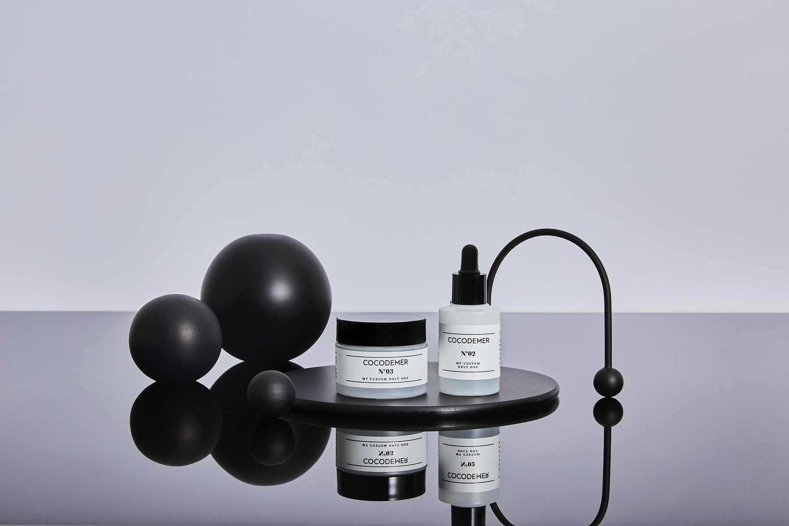
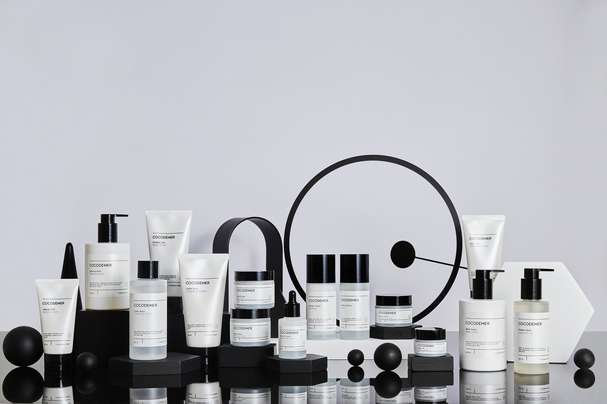

피부를 보고,
그에 맞게 만들었던 시간.
COCODEMER는 피부를 측정하고,
고객별로 제품을 조제하는 것에서 시작했습니다.
그 경험은 완제품 17종으로 이어졌고,
이후 Skin Code라는 온라인 맞춤 시스템으로 확장됐습니다.
이곳에는
그 과정에서 남은 제품과 처방,
그리고 COCODEMER가 피부를 바라봐 온 기록을 담았습니다.
한 사람의 피부에서
시작했습니다.

제품을 먼저 고르지 않았습니다.
피부를 측정하고,
그날의 피부 상태를 확인한 뒤
세럼과 크림을 고객별로 조제했습니다.
맞춤 세럼은 4가지,
맞춤 크림은 3가지 기준으로 운영했고,
실제 제품은
고객마다 다르게 만들어졌습니다.
한 달 뒤 다시 방문하면
피부를 다시 측정했습니다.
피부가 달라져 있으면
처방도 달라졌습니다.
현재는 고객별 맞춤 조제 서비스를 운영하지 않습니다.
맞춤의 경험을
일상의 스킨케어로 넓혔습니다.

맞춤 세럼과 크림만으로
끝내지 않았습니다.
맞춤 제품과 함께 사용할 수 있도록
완제품 17종도 개발했습니다.
클렌징과 마스크,
스킨케어,
핸드&바디,
선케어까지
하나의 스킨케어 루틴으로 구성했습니다.
이 제품들은 피부 측정을 받지 않아도
구매할 수 있는 완제품이었지만,
맞춤형 화장품에서 사용한
원료와 기술을 바탕으로 만들었습니다.


맞춤의 기준을,
매장 밖으로.

매장에 직접 오지 않아도
같은 기준으로 자신의 피부를 이해할 수 있도록
Skin Code Solution을 만들었습니다.
건성 / 지성
민감 / 저항
색소 / 비색소
주름 / 탄력
네 가지 축의 조합으로
16가지 피부 타입을 구분했습니다.
Skin Code는
미리 정해진 완제품을 고르는 방식이 아니었습니다.
온라인 피부 테스트로 타입을 확인한 뒤,
해당 타입의 처방에 따라
세럼을 고객별로 조제해 발송했습니다.
제품은 바뀌어도,
피부를 먼저 보는 기준은 남았습니다.
맞춤 조제 서비스와
당시의 제품들은 지금은 운영하지 않습니다.
하지만 피부를 먼저 보고,
그 차이를 이해하고,
필요한 것을 구분해 제품을 만든다는 생각은
지금의 COCODEMER에도
이어지고 있습니다.
COCODEMER BIO

COCODEMER가 별도로 개발했던
Dermocosmetics 자산입니다.
현재 COCODEMER의 일반 스킨케어와는
분리해 기록으로 보존합니다.